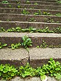

weed

Definition: A weed is a plant considered undesirable in a particular situation, growing where it is not wanted. The concept of weeds is particularly significant in agriculture, where the aim is growing crops or pastures of a single species, or a mixture of a few desired species. In such environments, other plant species are considered undesirable and therefore weeds. Besides, some weeds have undesirable characteristics making them a plant pest in most human settings.Examples of weeds are plants unwanted in human-controlled settings, such as farm land, orchards, gardens, lawns, parks, residential and industrial areas. Taxonomically though, the term "weed" has no botanical significance, because a plant that is a weed in one context, is not a weed when growing in a situation where it is wanted. In the same way, volunteer plants are regarded as weeds in a subsequent crop. Some plants that are widely regarded as weeds are intentionally grown in gardens and other cultivated settings, in which case they are sometimes called beneficial weeds. The term weed is also applied to any plant that grows or reproduces aggressively, or is invasive outside its native habitat.More broadly, the term "weed" is occasionally applied pejoratively to species outside the plant kingdom, species that can survive in diverse environments and reproduce quickly; in this sense it has even been applied to humans.Weed control is important in agriculture and horticulture. Methods include hand cultivation with hoes, powered cultivation with cultivators, smothering with mulch or soil solarization, lethal wilting with high heat, burning, or chemical attack with herbicides and cultural methods such as crop rotation and fallowing land to reduce the weed population.
Source: Wikipedia
Wikipedia Page (Something wrong with this association? Let us know.)
Wikidata Page (Something wrong with this association? Let us know.)
Occurs in: